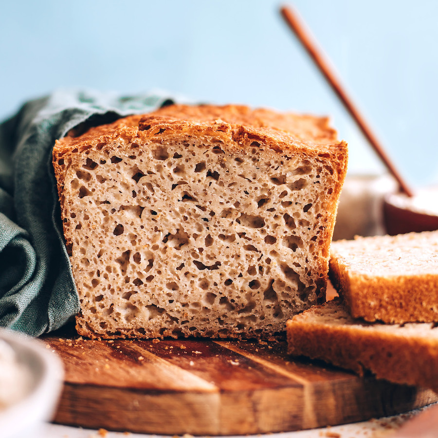

Gluten Free Bread

Description
A homemade gluten-free bread recipe that's simple to make, dairy-free, and bakes into the best gluten-free bread. Make your next lunch with this easy gluten-free sandwich bread.
Ingridients
- 1. 2 ½ cups of my gluten-free flour blend + ½ cup of almond flour + ¼ cup flaxseed meal (ground flaxseed).
- 2. 2 ½ cups of my flour blend + ½ cup of millet flour + ¼ cup of flaxseed meal. It's an amazing nut free gluten free bread.
- 3. 2 ½ cups of Bob's Red Mill 1-to-1 gluten-free flour blend + ½ cup of almond flour + ¼ cup flaxseed meal.
- 4. 2 ½ cups of Bob's Red Mill 1-to-1 gluten-free flour blend + ½ cup millet flour + ¼ cup flaxseed meal.
Steps
- Add the sugar and yeast to your warm water (95-110 degrees F) and stir; set it aside for 5-10 minutes but no longer.
- While your yeast is proofing, in the bowl of a stand mixer fitted with the paddle attachment, add the flours, flax seed meal, xanthan gum, baking powder, and salt. Turn your mixer to low and mix just until combined.
- Add the oil, egg whites, vinegar, and proofed yeast mixture.
- Turn the mixer to a medium speed and mix for an additional 2 minutes. The dough will be thick and sticky. Turn off the mixer and scrape down the sides.
- Using a rubber spatula, add the dough to your prepared loaf pan making sure to fill in the corners of the pan and level the top. Wet your fingers and smooth the top.
- Cover the dough with a lightly oiled piece of plastic wrap and allow it to rise in a warm place for 45 to 60 minutes, or until it has risen slightly above the loaf pan.
- When the dough is near the top of the pan, preheat your oven to 350°F. Remove the plastic wrap and bake for 60 – 65 minutes. Half way through baking, cover the bread loaf with a piece of foil to keep it from over-browning.
- Remove the loaf from the oven and let cool completely before slicing. Slice the entire loaf and store in a container at room temperature for up to 4 days or in the freezer for up to a month.